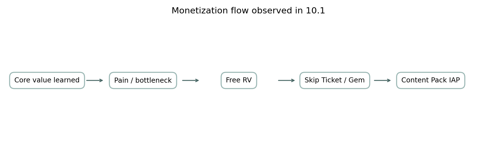

469실제 ASTC Texture2D
51상점 상품 레코드
20보상형 광고 레코드
10 + 5활성 비서 토큰 + 추가 아트 슬롯
가장 큰 결론 — 이 게임은 단순 채굴 아케이드에서 경영 자동화 → 일꾼 RPG 메타 → 비서 수집 → 월드맵 기간 한정 이벤트로 확장되고 있습니다. 10.1 Android 공개 노트는 일꾼/상점에 머물지만, 10.1 XAPK에는 비서실·월드맵·이벤트 전용 장비/재화/상점까지 들어 있습니다.
게임의 변화는 4단계로 보는 것이 가장 쉽습니다
1. 채굴 코어
부수기 → 회수 → 판매 → 업그레이드
부수기 → 회수 → 판매 → 업그레이드
→
2. 경영 자동화
R&D · 영업 · 자동채굴 · 트럭
R&D · 영업 · 자동채굴 · 트럭
→
3. 인력 메타
일꾼 · 스태미나 · HR · 경장비
일꾼 · 스태미나 · HR · 경장비
→
4. LiveOps
비서 · 월드맵 · 3일 이벤트 · 전용 경제
비서 · 월드맵 · 3일 이벤트 · 전용 경제

수익화의 핵심도 “상품”보다 “노출 타이밍”입니다
장비 해금 후
Hydraulic Breaker(301) 해금이 속도·파워·자석·현금·기어·젬 광고와 Founder 패키지의 첫 큰 게이트로 쓰입니다.
XAPK 확인새 시스템 학습 후
Shop, Biz Point, Secretary처럼 재화/캐릭터 가치를 먼저 학습시킨 뒤 상품을 노출합니다.
XAPK 확인이벤트 세션 안에서
무료 RV 횟수 → 젬 비용 증가 → 저가 Special Kit로 이어지는 단계형 구조가 있습니다.
XAPK 확인
향후 업데이트에서 볼 포인트
공식 확인XAPK 확인
높음 — Android에서 비서실/월드맵 LiveOps의 본격 노출. iOS 공개 설명과 Android 10.1 XAPK 리소스가 서로 맞물립니다.
XAPK 확인분석 추정
중간 — 이벤트 지역 확대. 현재 월드맵 선택 UI는 6대륙 분량인데 이벤트 아이콘/데이터는 4지역 중심입니다.
XAPK 확인분석 추정
중간 — 비서 캐릭터/패키지 확대. 활성 토큰은 10명이지만 Texture2D 아트 슬롯은 15세트까지 존재합니다.